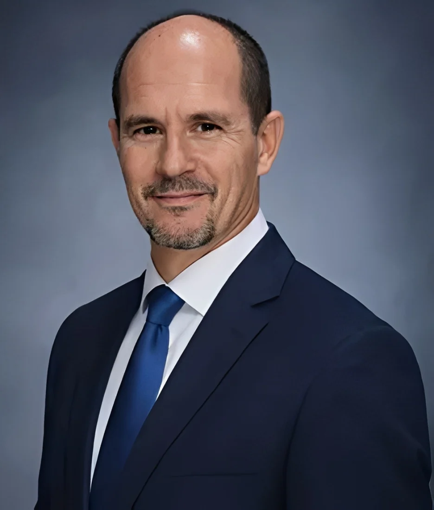

Company Background & Experience
TechPro Engineering was founded in the year 2000, with the business formally registered as TechPro Engineering, Manufacturing & Supplies (Pty) Ltd in 2012. The company is built on more than 25 years of experience within the engineering and manufacturing sector.
This experience spans a wide range of disciplines, including hydraulics, tail lifts, cylinder manufacturing, fabrication, and precision engineering. TechPro has also accumulated extensive industry knowledge through long-term involvement in mining and exploration drilling environments.
Leadership & Engineering Expertise
Gerhard Gouws, the Director of TechPro Engineering, leads the business with a strong focus on practical, solution-driven engineering. He is closely involved in the design, development, and manufacturing of hydraulic cylinders, wear components, and mechanical systems, particularly within the tail lift and exploration drilling sectors.
With long-term, hands-on experience in these industries, Gerhard has redesigned hydraulic and wear components to improve durability, reliability, and service life in demanding operating environments. His approach combines precision manufacturing with a deep understanding of how mechanical systems perform in real-world conditions, ensuring TechPro delivers robust, fit-for-purpose engineering solutions.
Tail Lift Industry Specialists
TechPro brings approximately 17 years of experience within the commercial tail lift industry, working directly with OEM clients. The company specialises in the manufacture of OEM-specific components, producing parts to exact manufacturer specifications for a range of major industry players.
In addition to standard OEM components, TechPro also manufactures specialised and custom tail lift parts to meet individual client and application requirements.
Mining & Exploration Drilling Experience
With over 14 years of experience in the mining and exploration drilling sector, TechPro has supplied manufacturing support for mining tools and equipment, including wearable and high-impact components used in demanding operational environments.
This experience provides valuable insight into durability requirements, material performance, and precision manufacturing for heavy-duty industrial applications.
In-House Manufacturing Capabilities
All manufacturing at TechPro is completed in-house, allowing for full control over quality, tolerances, and production timelines. The company operates a wide range of machines to accommodate different component sizes and manufacturing requirements.
Internal drafting and design support ensures that components are manufactured accurately to specification, supporting both standard production and specialised custom work.
A Practical, Experience-Driven Approach
TechPro Engineering operates with a hands-on, practical approach shaped by decades of industry experience.
By keeping design, drafting, and manufacturing in-house, the company maintains close control over quality, accuracy, and delivery - supporting long-term partnerships with OEM clients.